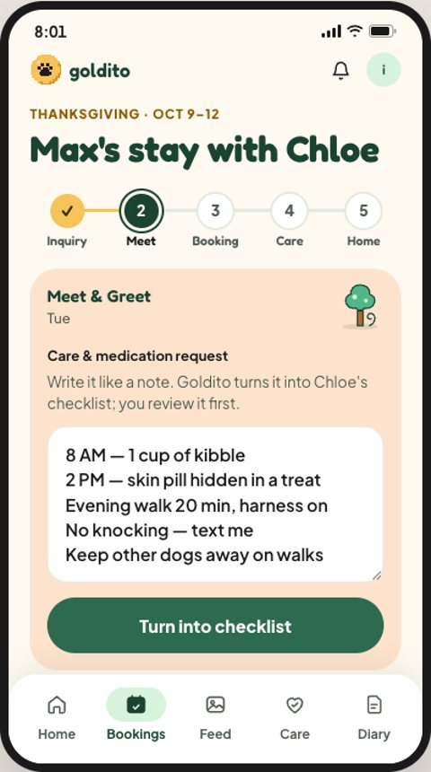
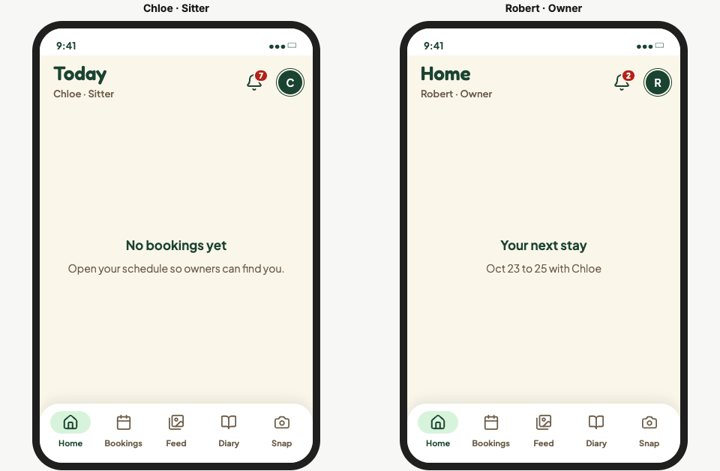
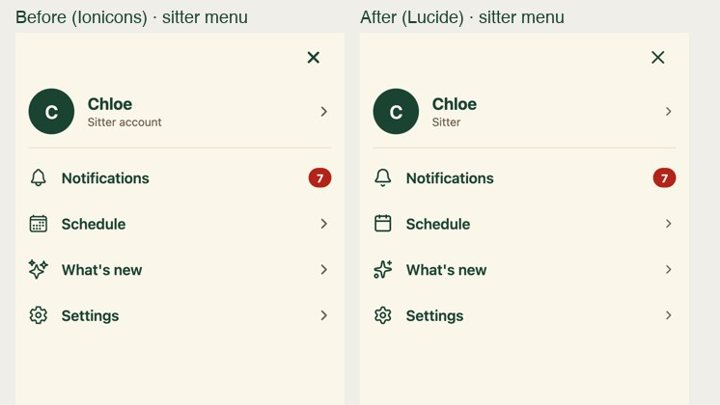
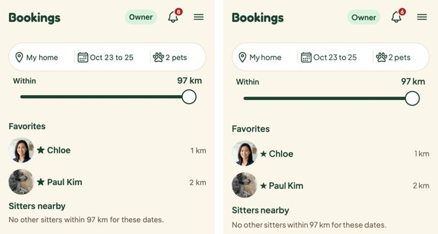
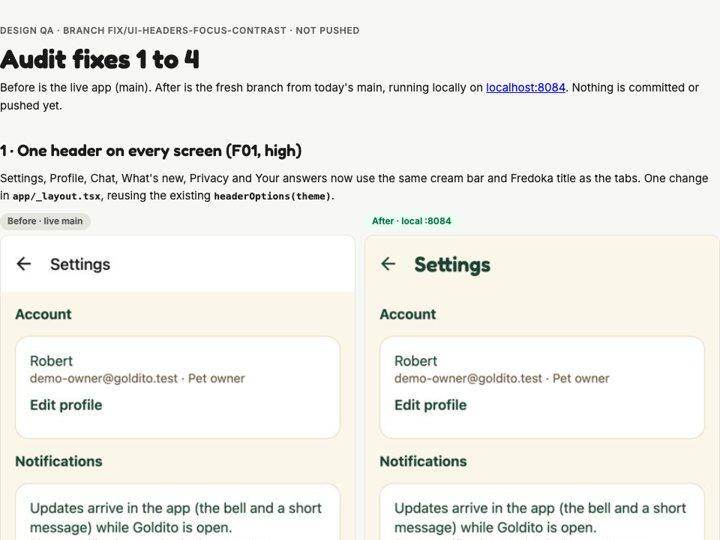
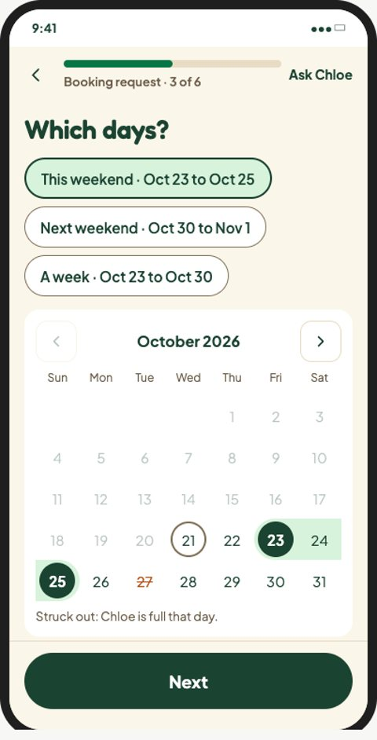
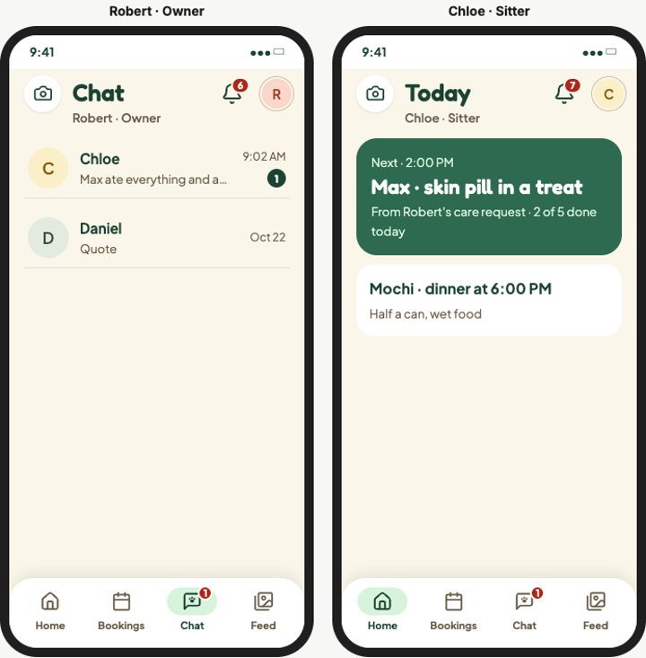

Worked on, what's left작업한 일, 남은 일
Covers Oct 21 and Oct 2210/21과 10/22
Worked on작업한 것








Needs the team팀이 해 줄 것
Minsik: merge in this order민식님: 이 순서로 머지All merged Oct 2310/23 모두 머지Each one after the previous, so none conflict. #279 first: main moved three times today.앞의 것 다음에 하나씩, 충돌 없음. #279 먼저: 오늘 main이 세 번 바뀌었어요.
Everyone: step-by-step booking?모두: 단계별 예약으로 갈까?Play it first. About a day to build if yes.먼저 체험해 보세요. 좋다면 만드는 데 약 하루.Booking flow
Minsik: sitter facts in search민식님: 검색에 시터 정보Rating, stays and availability for the sitter card.시터 카드용 평점, 숙박 수, 가능 여부.Request
Heads-up: a flaky test참고: 불안정한 테스트The sitter pet room feeding test fails now and then on CI, not from these changes.시터 펫 방 먹이 테스트가 CI에서 가끔 실패; 이번 변경과 무관.
Left before the Oct 28 freeze10/28 동결 전 남은 일
- Re-run the Figma plugin, then the kit's Figma links point at the new components and Lucide joins the Figma icon set피그마 플러그인 재실행, 그다음 키트 피그마 링크를 새 컴포넌트로, Lucide를 피그마 아이콘에
- Step-by-step booking in the app, if the call says yes단계별 예약 앱에 적용, 결정되면
- About 20 breed photos for pet chips품종 사진 약 20장 (펫 칩) #113
- On hold: pixel pets, illustrations보류: 픽셀 펫, 일러스트
Full list: every row and the visual notes전체 목록: 모든 항목과 비주얼 노트
Done 10/21 to 10/22완료 10/21~10/22
- In review리뷰 중Audit fixes 1 to 4one header, focus ring, Back name, readable placeholders감사 수정 1~4헤더 통일, 포커스 링, 뒤로 버튼 이름, 플레이스홀더 대비PR #269 QA
- Merged머지됨Copy batchSign out, Weekly rules, short helper text, dates, buttons are words문구 배치Sign out, Weekly rules, 짧은 도움말, 날짜 형식, 버튼은 글자로PR #277 QA
- Merged머지됨Link preview, loading screen, bubbles#215 closed; the parts that still apply링크 미리보기, 로딩 화면, 말풍선#215는 닫고 아직 유효한 부분만PR #278
- Done완료Sitter card and search pillprice on the right; When / Pets / Within with quick picks시터 카드와 검색 필가격은 오른쪽, 날짜·펫·거리 빠른 선택Page
- Done완료Open decisionsLucide picked (not Ionicons); pet chips: photo, else breed photo, else illustration결정 사항Lucide로 결정 (Ionicons 제외); 펫 칩은 사진, 없으면 품종 사진, 없으면 일러스트Page
- In review리뷰 중Illustrations v2On hold: 43 pieces with coats and variants; may come back after Lucide일러스트 v2보류: 털색과 변형 포함 43개; Lucide 이후 다시 쓸 수도
- Done완료Design system kit, rounds 1 to 375 components on one page with states and code; /dev/kit; booking flow sketch; CI token check. Pushed as #279.디자인 시스템 키트 1~3차컴포넌트 75개를 상태와 코드와 함께 한 페이지에; /dev/kit; 예약 흐름 스케치; CI 토큰 검사. #279로 푸시Kit QA
- Done완료Figma pluginmint chips, no more stacked archive screens, Design kit ticket (10 boards, 134 instances)피그마 플러그인민트 칩, 겹쳐 쌓이던 화면 해결, 디자인 키트 (보드 10개, 인스턴스 134개)
- Waiting대기Pixel pets v2four views, coats, tricolour; the pet room now draws pets in code, so the format needs agreeing with Minsik픽셀 펫 v24방향, 털색, 삼색; 펫 방이 코드로 그리게 바뀌어서 민식님과 형식 합의 필요
- Done완료Kit round 4: audit against Figmathe app's two calendars, Trip marked Needs work, profile card fixed, Copy on every code panel, Figma links that open the exact component (by layer name, so they survive plugin runs; the Oct 21 audit links are fixed too), 23 components compared키트 4차: 피그마 대조 감사앱의 캘린더 2종, 트립은 Needs work 표시, 프로필 카드 수정, 코드 복사 버튼, 정확한 컴포넌트로 바로 가는 피그마 링크 (레이어 이름 기준이라 플러그인 재실행 후에도 유지, 10/21 감사 링크도 수정), 컴포넌트 23개 비교Audit
- In review리뷰 중Header trial: who am I signed in as?A: the avatar is the menu. C: the name under the title. Try both, then pick in the PR헤더 시안: 누구로 로그인했지?A: 아바타가 메뉴. C: 제목 아래 이름. 둘 다 써 보고 PR에서 골라 주세요Try it#294
To do 10/22할 일 10/22
- Done완료Design kit pushedPR for review; pages on GitHub Pages디자인 키트 푸시리뷰용 PR, 페이지 게시 완료PR #279 Kit
- Done완료Run the Figma plugin: Expressive screens, then Tickets, Design kit피그마 플러그인 실행: 화면 다음 티켓의 디자인 키트
- Done완료Icon set: Lucide for now; the app swap is on its own branch, and one icon file keeps the Goldito illustrations an easy switch later; #182 done아이콘: 우선 Lucide; 앱 교체는 별도 브랜치, 아이콘 파일 하나라 나중에 Goldito 일러스트로 쉽게 전환; #182 완료Table #182
- To do할 일Product call: step-by-step booking (Mook and Minsik); play the sketch first단계별 예약 결정 (무크·민식); 스케치 먼저 체험QA
- To do할 일Backend: sitter facts in the search (Minsik, request below)백엔드: 시터 정보 검색에 추가 (민식님, 아래 요청)Request
- To do할 일About 20 breed photos for pet chips (Unsplash or #113)품종 사진 약 20장 (Unsplash 또는 #113)#113
- To do할 일Merge #279: #277 and #278 are merged; #279 is being updated to the new main, then it's ready#279 머지: #277, #278 머지 완료; #279는 새 main 반영 중, 끝나면 머지 가능
- To do할 일Pixel pets: rework the visualsnot there yet; redo the look first, then agree the format with Minsik (his pet room draws pets in code)픽셀 펫: 비주얼 다시아직 부족함, 룩부터 다시 하고 형식은 민식님과 합의 (펫 방은 코드로 그림)
- To do할 일Illustrations: more workon hold, library stays as is일러스트: 추가 작업보류, 라이브러리는 그대로
- To do할 일Step-by-step booking in the app, after today's list단계별 예약 앱에 적용, 오늘 목록 다음에Sketch
Visual notes비주얼 노트
Every doc from today. All of them are also in the site search: press / on any page.오늘 만든 문서 전부. 어느 페이지에서든 / 를 누르면 검색에도 있어요.


Work in progress작업 중
Work in progress작업 중
Request for Minsik: sitter facts in the search민식님 요청: 검색 결과에 시터 정보
search_sitters_nearby already returns distance and nightly rates. For the agreed sitter card, could it also return, per sitter: rating_avg (1 decimal, from reviews, null when none), stay_count (finished stays), and for the searched dates available (true or false) and first_full_day (a date, or null)? The card (SitterResultCard) already takes rating, stays and availability; nothing else changes on the frontend.search_sitters_nearby가 거리와 1박 요금은 이미 돌려줍니다. 합의한 시터 카드를 위해 시터마다 rating_avg(소수 1자리, 리뷰가 없으면 null), stay_count(완료된 숙박 수), 검색한 날짜 기준 available(true/false)과 first_full_day(날짜 또는 null)도 함께 받을 수 있을까요? 카드(SitterResultCard)는 rating, stays, availability를 이미 받을 수 있어서 프론트는 이 외에 바뀌는 게 없습니다.